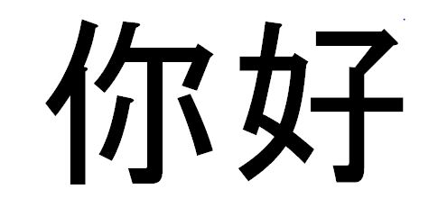
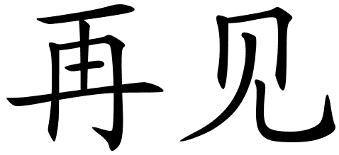

<
<All the stuff you need to know . . .
Beijing, China's capital city, is a vibrant mix of history and modernity. Having served as the capital of the country for more than 800 years, it is home to some of the finest remnants of China's imperial past. Beijing is brightened by its glorious past, but is by no means struck in the past. Behind its rich and complex historical tapestries, everyday life unfolds with bewildering variety. From the commanding austerity of the Forbidden City to the hectic bar street at Sanlitun, Beijing is overflowing with a unique charm, beckoning visitors from around the world to lose themselves in the furious pace. Read more
Translation to Mandarin
北京，中国的首都，是一个充满活力的历史和现代性的组合。
作为国家的首都已有800多年的历史，它拥有中国帝国历史上最好的一些遗迹。北京因其辉煌的过去而变得光彩夺目，
但在过去没有什么意义。在其丰富而复杂的历史挂毯背后，日常生活展现着迷人的品种。从紫禁城的命令紧缩到三里屯的繁忙酒吧街，
北京充满了独特的魅力，来自世界各地的游客，以惊人的速度失去自己。
| My Prefered Foreign Language | ||
|---|---|---|
| Mandarin Symbol | Mandarin | English Translation |
| < | Ni Hao | Hello |
| < |
XieXie | Thank You |
| < | Zaijian | Bye |

The Clock Tower in the V&A Waterfront is a great historical landmark. The Clock Tower boasts an old tidal-gauge mechanism on the bottom floor, which was used to check tide levels. The second floor holds a decorative mirror room, which enabled the port captain a full view of all harbour activities. The clock mechanism can be found on the top floor and thanks to the restoration of this national monument in 1997, the original clock is still in use today. Read more
Translation to Mandarin
在V＆A海滨的钟楼是一个伟大的历史地标。钟楼在底层有一
个老潮汐测量机制，用于检查潮汐水平。
二楼设有一个装饰镜房，使港口船长能全面了解所有港湾活动。
时钟机制可以在顶层找到，由于这个国家纪念碑在1997年的恢复，原来的时钟仍在使用今天

Artwork from practically each African country and culture is available. ATP’s roots started with the establishment of an art workshop in Zimbabwe in 1978. ATP has been housed in this location; the Old Port Captain’s Building at Cape Town’s Waterfront since 2001. Read more
Translation to Mandarin
几乎每个非洲国家和文化的艺术品都可用。
ATP的根源始于1978年在津巴布韦建立一个艺术研讨会。
ATP已经安置在这个地方;旧港口船长的大厦在开普敦的江边自2001年以来。


The Alfred Basin was the first docks for what is today the Port of Cape Town. It was officially opened by and named after Prince Alfred the Duke of Edinburgh, in July 1870 after 10 years of construction work. The prince, Queen Vctoria's second son, laid the foundation stone in 1860. The basin is now part of the Victoria & Alfred Waterfront. Read more
Translation to Mandarin
阿尔弗雷德盆地是今天开普敦港的第一个码头。
它正式开放并命名的王子阿尔弗雷德公爵爱丁堡，
在1870年7月经过10年的建设工作。王子，
王后Vctoria的第二个儿子，
在1860年奠定了基础石头。
盆地现在是维多利亚和阿尔弗雷德滨水区的一部分。